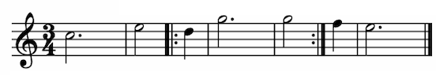

Repeats (mid-measure)

MusicXML uses <bar-style> to represent the visual repeat barline and <repeat> to represent the repeated playback.
MNX has a single <repeat> element to represent both concepts. The <repeat> elements go in the <global> section, in the appropriate bar.
MusicXML
TODO: Michael Good said:
"[This] can be represented in MusicXML 3.1 using a <barline location="middle"> element
in the middle of the measure. Alternatively you can have the repeat start a new measure,
leaving the measures on either side of the repeat short of the complete duration of the time signature."